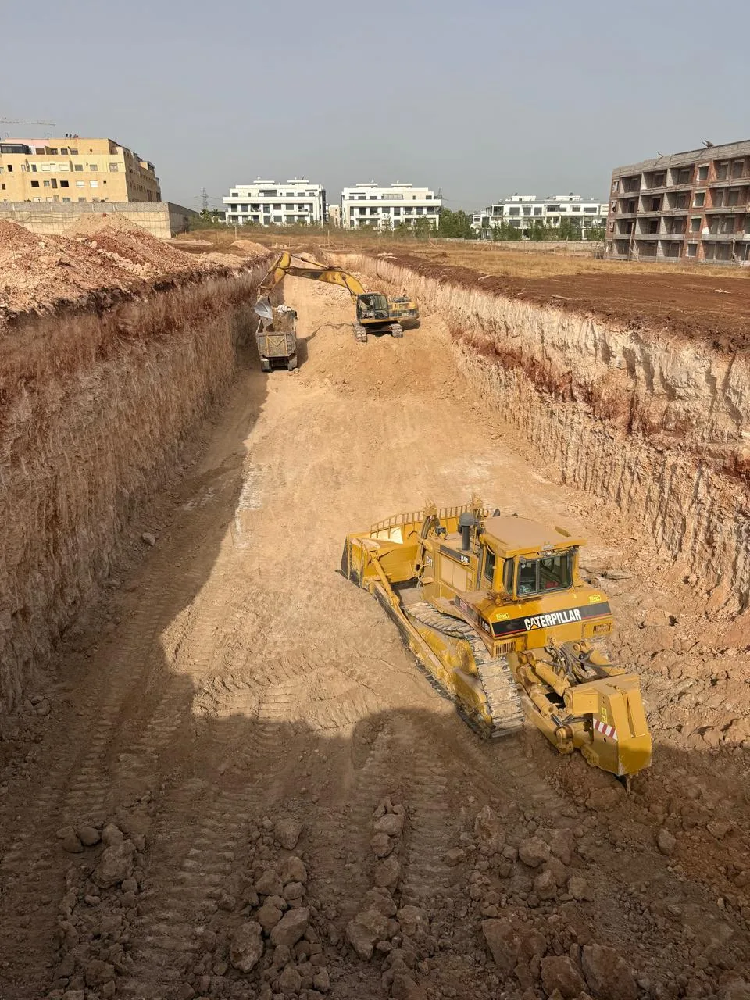

Terrassement Casablanca & Grand Casablanca
Excavation, déblaiement, nivellement et préparation de terrain par des experts BTP. Nous intervenons sur tous types de chantiers à Casablanca, Mohammedia, Bouskoura et dans tout le Maroc.

Votre spécialiste du terrassement au Maroc
WAHID EASY TRAVAUX est une entreprise de terrassement à Casablanca reconnue pour son expertise, la qualité de ses travaux et le respect des délais. Qu'il s'agisse d'un chantier résidentiel, industriel ou d'un grand projet d'infrastructure, nous disposons des équipes et des engins adaptés.
Actifs depuis plus de 10 ans dans le BTP marocain, nous avons réalisé plus de 200 chantiers de terrassement à Casablanca, Mohammedia, Bouskoura, Nouaceur, Médiouna et dans tout le Maroc.
Terrassement BTP — Nos prestations à Casablanca
Le terrassement à Casablanca constitue la première étape indispensable de tout projet de construction. Sans une préparation rigoureuse du terrain, aucune structure ne peut être édifiée dans les règles de l'art. WAHID EASY TRAVAUX réalise l'ensemble des travaux de terrassement pour particuliers, promoteurs immobiliers, entreprises industrielles et collectivités territoriales au Maroc.
Types de travaux de terrassement que nous réalisons
1. Excavation et fouilles
Nos équipes réalisent des fouilles en pleine masse, des tranchées et des puits pour la mise en place de fondations, de réseaux enterrés et d'ouvrages souterrains. Chaque excavation est réalisée selon les plans établis par le bureau d'études et dans le respect des normes de sécurité marocaines.
- Fouilles pour fondations superficielles et profondes
- Tranchées pour réseaux VRD (assainissement, eau potable, électricité)
- Puits de reconnaissance et sondages
- Excavations pour sous-sols et parkings souterrains
2. Déblaiement et remblaiement
Le déblaiement consiste à extraire et évacuer les matériaux excédentaires du terrain. Le remblaiement, quant à lui, permet d'apporter des matériaux pour rehausser un terrain ou combler une excavation. Nous gérons les deux opérations avec notre flotte de camions bennes et d'engins de chantier.
- Déblaiement et évacuation des terres
- Remblaiement avec compactage par couches
- Transport et mise en décharge agréée des matériaux
- Réutilisation des matériaux excavés comme remblai si conforme
3. Nivellement et planage
Un terrain parfaitement nivelé et plané est indispensable pour garantir la stabilité des constructions et faciliter les travaux ultérieurs. WAHID EASY TRAVAUX dispose de niveleuses et d'engins de damage pour assurer une plateforme impeccable sur vos chantiers à Casablanca et au Maroc.
- Nivellement général de terrain
- Décapage de la terre végétale
- Réglage de plateforme aux côtes prévues
- Compactage et damage de sous-couches
4. Préparation de plateformes industrielles
Pour les zones industrielles, entrepôts et complexes logistiques à Casablanca et dans la région du Grand Casablanca, nous réalisons des plateformes compactées capables de supporter des charges lourdes. Chaque plateforme est réalisée selon les spécifications techniques du projet.
Nos chantiers de terrassement au Maroc
WAHID EASY TRAVAUX intervient sur tous types de projets de terrassement au Maroc :
- Chantiers résidentiels : villas, immeubles, résidences
- Projets commerciaux : centres commerciaux, hôtels, bureaux
- Zones industrielles : usines, entrepôts, parkings
- Infrastructures publiques : routes, stades, équipements publics
- Projets agricoles : bassins, retenues collinaires, nivellement de terres
Engins de terrassement disponibles à Casablanca
Pour garantir l'efficacité de nos interventions, WAHID EASY TRAVAUX dispose d'une flotte d'engins modernes et bien entretenus :
- Pelles mécaniques (différentes capacités : 20T, 30T)
- Mini-pelles pour zones confinées et accès difficiles
- Bulldozers et niveleuses pour décapage et nivellement
- Compacteurs à rouleaux vibrants pour damage
- Camions bennes pour évacuation des terres
- Dumpers pour transport interne sur chantier
Nos engagements terrassement Casablanca
Expertise terrain
+10 ans d'expérience en terrassement à Casablanca. Nous maîtrisons tous les types de sols marocains : argileux, rocheux, sableux.
Délais respectés
Planning rigoureux et suivi quotidien de chantier pour une livraison dans les délais contractuels.
Sécurité chantier
Protocoles de sécurité stricts, équipes formées aux risques BTP, signalisation et balisage de chantier irréprochables.
Prix compétitifs
Devis détaillés et transparents. Pas de frais cachés. Le meilleur rapport qualité/prix pour vos travaux de terrassement au Maroc.
Engins modernes
Flotte d'engins récents et bien entretenus. Pelles, bulldozers, compacteurs et camions adaptés à chaque chantier.
Équipe qualifiée
Conducteurs d'engins certifiés, chefs de chantier expérimentés et ingénieurs dédiés à votre projet.
Comment se déroule un chantier de terrassement ?
Étude du terrain
Visite du site, analyse du sol, étude des plans et évaluation des contraintes techniques.
Devis détaillé
Remise d'un devis complet et transparent sous 24h, avec détail des prestations et prix.
Mobilisation engins
Déploiement des engins adaptés et installation du chantier dans les délais convenus.
Exécution des travaux
Réalisation du terrassement avec contrôle qualité permanent et suivi des côtes d'excavation.
Compactage & contrôle
Compactage des remblais par couches et vérification de la portance selon les spécifications.
Réception & nettoyage
Livraison du chantier propre et net, avec réception contradictoire et documents de fin de travaux.
Terrassement dans tout le Grand Casablanca
WAHID EASY TRAVAUX intervient pour tous vos travaux de terrassement à Casablanca et dans les villes avoisinantes. Nous acceptons également des projets dans toutes les grandes villes du Maroc.
FAQ — Terrassement Casablanca
Le coût d'un terrassement à Casablanca dépend de plusieurs facteurs : la superficie du terrain, la profondeur d'excavation, la nature du sol (meuble, rocheux, argileux), l'accessibilité du site et les volumes à évacuer. WAHID EASY TRAVAUX propose des devis gratuits, détaillés et sans engagement sous 24h.
La durée d'un terrassement varie selon le volume à excaver et la complexité du chantier. Pour une villa individuelle à Casablanca, comptez généralement 2 à 5 jours. Pour un immeuble ou un projet industriel, la durée peut aller de 2 semaines à plusieurs mois. Nous vous communiquons le planning précis dans notre devis.
Oui. Nous disposons de mini-pelles et d'engins compacts capables d'intervenir dans des zones à accès restreint : terrains enclavés, zones urbaines denses, chantiers mitoyens. Nos conducteurs d'engins sont formés pour travailler dans des conditions délicates en toute sécurité à Casablanca et partout au Maroc.
Absolument. WAHID EASY TRAVAUX collabore régulièrement avec des architectes, bureaux d'études géotechniques et maîtres d'œuvre sur des projets de terrassement au Maroc. Nous savons lire et interpréter les plans techniques pour une exécution conforme aux attentes du projet.
Oui, nous prenons en charge l'intégralité de l'évacuation des terres : chargement, transport et mise en décharge agréée. Si les matériaux excavés sont réutilisables (remblai de qualité), nous pouvons les conserver sur place pour réduire les coûts et l'impact environnemental de votre chantier.